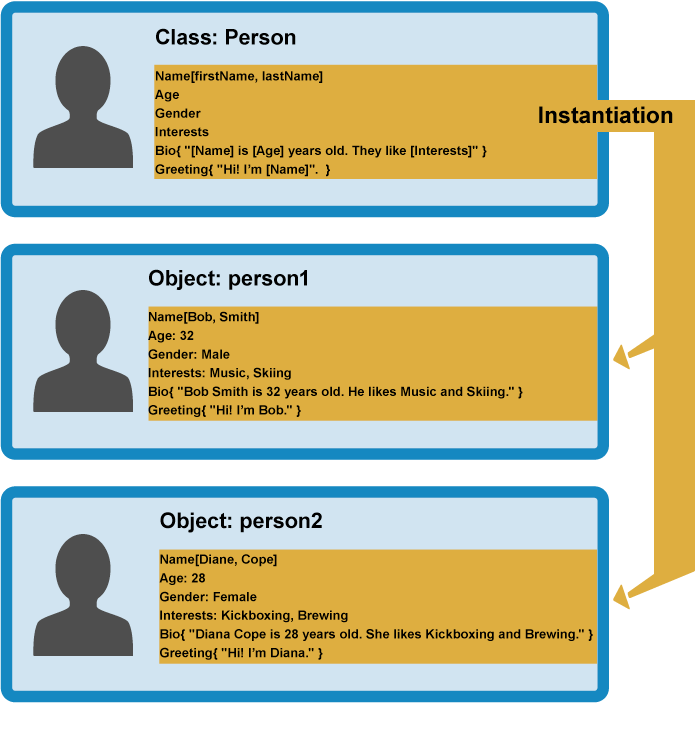
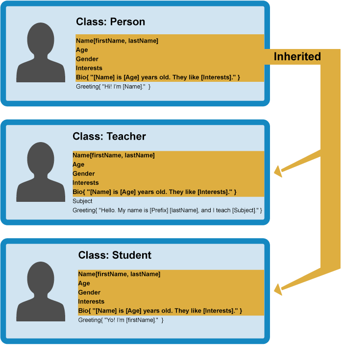

With the basics out of the way, we'll now focus on object-oriented JavaScript (OOJS) — this article presents a basic view of object-oriented programming (OOP) theory, then explores how JavaScript emulates object classes via constructor functions, and how to create object instances.
| Prerequisites: | Basic computer literacy, a basic understanding of HTML and CSS, familiarity with JavaScript basics (see First steps and Building blocks) and OOJS basics (see Introduction to objects). |
|---|---|
| Objective: | To understand the basic theory behind object-oriented programming, how this relates to JavaScript ("everything is an object"), and how to create constructors and object instances. |
Object-oriented programming from 10,000 meters
To start with, let's give you a simplistic, high-level view of what Object-oriented programming (OOP) is. We say simplistic, because OOP can quickly get very complicated, and giving it a full treatment now would probably confuse more than help. The basic idea of OOP is that we use objects to model real world things that we want to represent inside our programs, and/or provide a simple way to access functionality that would otherwise be hard or impossible to make use of.
Objects can contain related data and code, which represent information about the thing you are trying to model, and functionality or behavior that you want it to have. Object data (and often, functions too) can be stored neatly (the official word is encapsulated) inside an object package (which can be given a specific name to refer to, which is sometimes called a namespace), making it easy to structure and access; objects are also commonly used as data stores that can be easily sent across the network.
Defining an object template
Let's consider a simple program that displays information about the students and teachers at a school. Here we'll look at OOP theory in general, not in the context of any specific programming language.
To start this off, we could return to our Person object type from our first objects article, which defines the generic data and functionality of a person. There are lots of things you could know about a person (their address, height, shoe size, DNA profile, passport number, significant personality traits ...) , but in this case we are only interested in showing their name, age, gender, and interests, and we also want to be able to write a short introduction about them based on this data, and get them to say hello. This is known as abstraction — creating a simple model of a more complex thing that represents its most important aspects in a way that is easy to work with for our program's purposes.

In some OOP languages, this generic object type definition is called a class (JavaScript uses a different mechanism and terminology, as you'll see below) — it isn't actually an object, rather it is a template that defines what characteristics an object should have.
Creating actual objects
From our class, we can create object instances — objects that contain the data and functionality defined in the class. From our Person class, we can now create some actual people:

When an object instance is created from a class, the class's constructor function is run to create it. This process of creating an object instance from a class is called instantiation — the object instance is instantiated from the class.
Specialist classes
In this case we don't want generic people — we want teachers and students, which are both more specific types of people. In OOP, we can create new classes based on other classes — these new child classes can be made to inherit the data and code features of their parent class, so you can reuse functionality common to all the object types rather than having to duplicate it. Where functionality differs between classes, you can define specialized features directly on them as needed.

This is really useful — teachers and students share many common features such as name, gender, and age, so it is convenient to only have to define those features once. You can also define the same feature separately in different classes, as each definition of that feature will be in a different namespace. For example, a student's greeting might be of the form "Yo, I'm [firstName]" (e.g Hi, I'm Sam), whereas a teacher might use something more formal, such as "Hello, my name is [Prefix] [lastName]" (e.g Hello, My name is Mr Griffiths).
Note: The fancy word for the ability of multiple object types to implement the same functionality is polymorphism. Just in case you were wondering.
You can now create object instances from your child classes. For example:

In the rest of the article we'll start to look at how OOP theory can be put into practice in JavaScript.
Constructors and object instances
Some people argue that JavaScript is not a true object-oriented language — for example it doesn't have a class statement for creating classes like many OO languages. JavaScript instead uses special functions called constructor functions to define objects and their features. They are useful because you'll often come across situations in which you don't know how many objects you will be creating; constructors provide the means to create as many objects as you need in an effective way, attaching data and functions to them as required.
When a new object instance is created from a constructor function, the functionality is not all copied over to the new object like "classic" OO languages — instead the functionality is linked to via a reference chain called a prototype chain (see Object prototypes). So this is not true instantiation, strictly speaking — JavaScript uses a different mechanism to share functionality between objects.
Note: Not being "classic OOP" is not necessarily a bad thing; as mentioned above, OOP can get very complex very quickly, and JavaScript has some nice ways to take advantage of OO features without having to get too deep into it.
Let's explore creating classes via constructors and creating object instances from them in JavaScript. First of all, we'd like you to make a new local copy of the oojs.html file we saw in our first Objects article.
A simple example
- Let's start by looking at how you could define a person with a normal function. Add this function below the existing code:
function createNewPerson(name) { var obj = {}; obj.name = name; obj.greeting = function () { alert('Hi! I\'m ' + this.name + '.'); } return obj; } - You can now create a new person by calling this function — try the following lines in your browser's JavaScript console:
var salva = createNewPerson('salva'); salva.name; salva.greeting();This works well enough, but it is a bit longwinded; if we know we want to create an object, why do we need to explicitly create a new empty object and return it? Fortunately JavaScript provides us with a handy shortcut, in the form of constructor functions — let's make one now! - Replace your previous function with the following:
function Person(name) { this.name = name; this.greeting = function() { alert('Hi! I\'m ' + this.name + '.'); }; }
The constructor function is JavaScript's version of a class. You'll notice that it has all the features you'd expect in a function, although it doesn't return anything or explicitly create an object — it basically just defines properties and methods. You'll see the this keyword being used here as well — it is basically saying that whenever one of the these object instances is created, the object's name property will be equal to the name value passed to the constructor call, and the greeting() method will use the name value passed to the constructor call too.
Note: A constructor function name usually starts with a capital letter — this convention is used to make constructor functions easier to recognize in code.
So how do we call a constructor to create some objects?
- Add the following lines below your previous code addition:
var person1 = new Person('Bob'); var person2 = new Person('Sarah'); - Save your code and reload it in the browser, and try entering the following lines into your text input:
person1.name person1.greeting() person2.name person2.greeting()
Cool! You'll now see that we have two new objects on the page, each of which are stored under a different namespace — when you access their properties and methods, you have to start calls with person1 or person2; they are neatly packaged away so they won't clash with other functionality. They do however have the same name property and greeting() method available. Note that they are using their own name value that was assigned to them when they were created; this is one reason why it is very important to use this, so they will use their own values, and not some other value.
Let's look at the constructor calls again:
var person1 = new Person('Bob');
var person2 = new Person('Sarah');
In each case, the new keyword is used to tell the browser we want to create a new object instance, followed by the function name with its required parameters contained in parentheses, and the result is stored in a variable — very similar how to how a standard function is called. Each instance is created according to this definition:
function Person(name) {
this.name = name;
this.greeting = function() {
alert('Hi! I\'m ' + this.name + '.');
};
}
After the new objects have been created, the person1 and person2 variables effectively contain the following objects:
{
name : 'Bob',
greeting : function() {
alert('Hi! I\'m ' + this.name + '.');
}
}
{
name : 'Sarah',
greeting : function() {
alert('Hi! I\'m ' + this.name + '.');
}
}
We say effectively because in actual fact the functionality is still defined in the class, rather than in the object instances, in contrast to the object literal we looked at earlier.
Creating our finished constructor
The example we looked at above was only a simple example to get us started. Let's now get on and create our final Person() constructor function.
- Remove the code you inserted so far, and add in this replacement constructor — this is exactly the same as the simple example in principle, with just a bit more complexity:
function Person(first, last, age, gender, interests) { this.name = { first, last }; this.age = age; this.gender = gender; this.interests = interests; this.bio = function() { alert(this.name.first + ' ' + this.name.last + ' is ' + this.age + ' years old. He likes ' + this.interests[0] + ' and ' + this.interests[1] + '.'); }; this.greeting = function() { alert('Hi! I\'m ' + this.name.first + '.'); }; }; - Now add in the following line below it, to create an object instance from it:
var person1 = new Person('Bob', 'Smith', 32, 'male', ['music', 'skiing']);
You'll now see that you can access the properties and methods just like we did with the first object we defined:
person1['age'] person1.interests[1] person1.bio() // etc.
Note: If you are having trouble getting this to work, try comparing your code against our version — see oojs-class-finished.html (also see it running live).
Further exercises
To start with, try adding a couple more object creation lines of your own, and try getting and setting the members of the resulting object instances.
In addition, there are a couple of problems with our bio() method — the output always includes the pronoun "He", even if your person is female, or some other preferred gender classification. And the bio will only include two interests, even if more are listed in the interests array. Can you work out how to fix this in the class definition (constructor)? You can put any code you like inside a constructor (you'll probably need a few conditionals and a loop). Think about how the sentences should be structured differently depending on gender, and depending on whether the number of listed interests is 1, 2, or more than 2.
Note: If you get stuck, we have provided an answer inside our GitHub repo (see it live) — try writing it yourself first though!
Other ways to create object instances
So far we've seen two different ways to create an object instance — declaring an object literal, and using a constructor function (see above).
These make sense, but there are other ways — we want to make you familiar with these in case you come across them in your travels around the Web.
The Object() constructor
First of all, you can use the Object() constructor to create a new object. Yes, even generic objects have a constructor, which generates an empty object.
- Try entering this into your browser's JavaScript console:
var person1 = new Object();
- This stores an empty object in the
person1variable. You can then add properties and methods to this object using dot or bracket notation as desired; try these examples:person1.name = 'Chris'; person1['age'] = 38; person1.greeting = function() { alert('Hi! I\'m ' + this.name + '.'); } - You can also pass an object literal to the
Object()constructor as a parameter, to prefill it with properties/methods. Try this:var person1 = new Object({ name : 'Chris', age : 38, greeting : function() { alert('Hi! I\'m ' + this.name + '.'); } });
Using the create() method
JavaScript has a built-in method called create(), which allows you to create a new object instance based on an existing object.
- Try this in your JavaScript console:
var person2 = Object.create(person1);
- Now try these:
person2.name person2.greeting()
You'll see that person2 has been created based on person1 — it has the same properties and method available to it. This is pretty useful, as it allows you to create new object instances without needing to define a constructor. The downside is that create() is not supported by browsers as far back as constructors (IE9, as opposed to IE8 or even before), plus some think constructors give your code more order — you can create your constructors in one place, then create instances as needed, and it is clear where they came from.
However, if you are not too worried about supporting really old browsers, and you only need a couple of copies of an object, creating a constructor could be overkill for your code. It is up to you what you prefer. Some people simply find create() easier to understand and use.
We'll explore the effects of create() in more detail later on.
Summary
This article has provided a simplified view of object-oriented theory — this isn't the whole story, but it gives you an idea of what we are dealing with here. In addition, we have started to look at how JavaScript relates and how it differs from "classic OOP", how to implement classes in JavaScript using constructor functions, and different ways of generating object instances.
In the next article we'll explore JavaScript object prototypes.